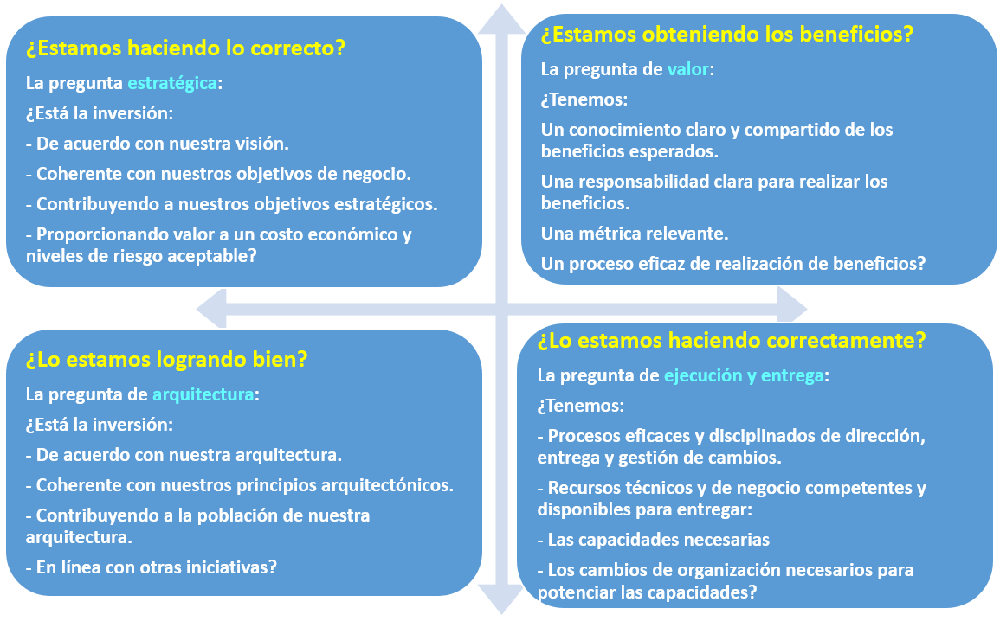
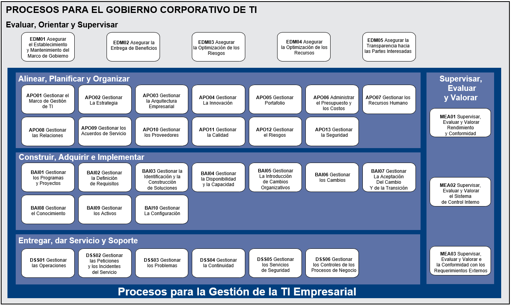

COBIT
Es una guía de mejores prácticas presentada como un marco de trabajo, dirigida al control y supervisión de tecnología de la información (TI).
Es una guía de mejores prácticas presentada como un marco de trabajo, dirigida al control y supervisión de tecnología de la información (TI).
Es la organización que se encarga de mantener y actualizar COBIT.
ISACA es una asociación internacional que apoya y patrocina el desarrollo de metodologías y certificaciones para la realización de actividades auditoría y control en sistemas de información.
Fue fundada en el año 1967 por un grupo de auditores en sistemas informáticos.
Actualmente ISACA es una asociación global sin ánimo de lucro compuesta por más de 140 000 profesionales en más de 180 países de todo el mundo.
El marco de referencia COBIT 5 en sus primeras versiones se definía como un marco de auditoría y control para auditores de TI (años 1996 COBIT 1 y 1998 COBIT 2).
Posteriormente ISACA en las revisiones del año 2000 genera COBIT 3 incluyendo un documento o guía de gestión para la dirección, con un acercamiento al concepto de gobierno de TI. Luego aparece la versión 4.0 de COBIT (año 2005-2007) la cual define un marco general de gobierno TI y definiciones como VAL IT (valor de las TI) y RISK IT (riesgos).
Finalmente en el mes de junio del 2012 COBIT 5, donde su principal principio es el de separar el gobierno de la gestión.
Val IT es un marco de referencia de gobierno que incluye principios rectores generalmente aceptados y procesos de soporte relativos a la evaluación y selección de inversiones de negocios de TI
Risk IT es un marco de referencia normativo basado en un conjunto de principios rectores para una gestión efectiva de riesgos de TI.
BMIS (Business Model for Information Security) una aproximación holística y orientada al negocio para la administración de la seguridad informática
ITAF (IT Assurance Framework) un marco para el diseño, la ejecución y reporte de auditorias de TI y de tareas de evaluación de cumplimiento.
El marco de referencia COBIT, basa su metodología en cinco principios claves para el gobierno y la gestión de las TI a nivel organizacional.
Principio 1. Satisfacer las necesidades de las partes interesadas
El marco de referencia COBIT provee todos los procesos y actividades necesarios para permitir la creación de valor del negocio mediante el uso de TI y apoyado de herramientas propias del marco de referencia, permitiendo la consecución de beneficios y reduciendo el riesgo y uso de recursos.
Adicionalmente COBIT permite traducir las metas del negocio a metas relacionadas con TI, estableciendo actividades y prácticas específicas para cada uno de los procesos.
Principio 2: Cubrir la empresa extremo a extremo
COBIT permite cubrir la empresa de extremo a extremo, cubriendo todos los procesos de la empresa, incluyendo todas las áreas funcionales, de TI, personal interno y externo, todo lo que sea relevante para el gobierno y la gestión de las TI relacionadas.
La función de TI es considerada como un activo más de la empresa no se enfoca solo en la función que realiza.
Principio 3: Aplicar un marco de referencia único integrado
El marco referencial de COBIT , aplica un marco de referencia único, integrando estándares, marcos de trabajo y buenas prácticas relacionadas con TI y con la finalidad de ser un marco principal para el gobierno y gestión de las TI de la empresa.
Principio 4: Hacer posible un enfoque holístico
El marco de referencia COBIT define distintas herramientas para apoyar la implementación de un sistema de gobierno y gestión para las TI de la empresa, todo esto basado en principios, políticas, marcos de trabajo, procesos, estructuras organizativas, cultura, ética, comportamiento, información, servicios, infraestructuras, aplicaciones, personas, habilidades y competencias.
Principio 5: Separar el gobierno de la gestión
El marco de referencia COBIT divide claramente al gobierno y la gestión, ya que cada uno de estos conceptos involucra diferentes estructuras y propósitos organizacionales diferentes.
Son elementos que sin los cuales es casi imposible la implementación de gobierno y gestión de COBIT.
Los catalizadores se definen en líneas generales como cualquier cosa que puede ayudar a conseguir las metas de la empresa.
El catalizador información considera toda la información relevante para la empresa, no sólo la información automatizada.
La información puede ser estructurada o desestructurada, formalizada o informal.
La información puede ser considerada como una etapa dentro del “ciclo de la información” de una empresa. Dentro del ciclo de la información, los procesos de negocio generan y procesan datos, transformándolos en información y conocimiento, y en última instancia generando valor para la empresa. El alcance del catalizador información se refiere principalmente a la fase de “información” dentro del ciclo de la información, pero también se cubren los aspectos de datos y conocimientos en COBIT 5.
Los roles, actividades y relaciones de gobierno, definen quién está involucrado en el gobierno, como se involucran, lo que hacen y cómo interactúan, dentro del alcance de cualquier sistema de gobierno. En COBIT 5, se hace una clara diferenciación entre las actividades de gobierno y de gestión en los dominios de gobierno y gestión, así como en la interconexión entre ellos y los actores implicados.

COBIT divide los procesos en dos áreas : Gobierno y Gestión
El marco de referencia COBIT 5 define varios procesos de gobierno y gestión todos con el objetivo de cubrir las metas tanto de empresas grandes en las que se maneja un considerable número de procesos o empresas pequeñas que manejan un número reducido de procesos.
Este modelo proporciona un marco integral para supervisar y medir el desempeño de TI en las organizaciones integrando buenas prácticas de gestión y representando todos los procesos que regularmente se encuentran en las mismas relacionados con las actividades de TI.
Existen dos áreas principales de procesos que divide COBIT 5 detallados a continuación:
Gobierno: Contiene un dominio con cinco procesos de gobierno, y dentro de cada uno de ellos se establecen prácticas de:
Gestión: Contiene cuatro dominios e igualmente dentro de cada uno de ellos se establecen prácticas de planificación, implementación, soporte y evaluación de las TI.
Procesos de Gobierno
Permite que las múltiples partes interesadas tengan una lectura organizada del análisis de opciones, identificación del norte a seguir y la supervisión del cumplimiento y avance de los planes establecidos
Procesos de Gestión
Utilización prudente de medios (recursos, personas, procesos, prácticas) para lograr un fin específico
COBIT 5 está formado por 37 procesos, que están clasificados en 5 dominios, que a su vez están divididos en 2 áreas de gobierno y gestión, los cuales son una guía para evaluar y diagnosticar el estado actual de la gestión de las TI en las empresas.
COBIT 5 se implementa a través de estos 37 procesos y los procesos se implementan a través de un esfuerzo de mejoras de procesos.

Descripción de los dominios de COBIT:
Evaluar, dirigir y monitorear (EDM):
Alinear, planificar y organizar (APO):
Construir, adquirir e implementar (BAI):
Entrega, servicio y soporte (DSS):
| - La entrega del servicio. |
| - La gestión de la seguridad y la continuidad. |
| - El soporte de servicio para los usuarios |
| - La gestión de los datos y las instalaciones operativas. |
Supervisar, evaluar y valorar (MEA):
ISO / IEC 38500: Es un estándar internacional para el Gobierno de TI. Provee un marco para gobernar las TI al interior de las organizaciones, brindando un conjunto de principios: Responsabilidad, estrategia, adquisición, rendimiento, conformidad y comportamiento humano.
PRINCE2: Viene de las palabras en inglés “PRojects IN Controlled Environments” ( Proyectos en Entornos Controlados), es un método de gestión de proyectos que cubre la gestión, el control y la organización de un proyecto.
PMBOK: Project Management Body of Knowledge (el Compendio del Saber de la Gestión de Proyectos). Esta guía es un instrumento desarrollado por el Project Management Institute (o PMI), que establece un criterio de buenas prácticas relacionadas con la gestión, la administración y la dirección de proyectos.
TOGAF: The Open Group Architecture Framework (Esquema de Arquitectura del Open Group). Es un esquema (o marco de trabajo) de Arquitectura Empresarial que proporciona un enfoque para el diseño, planificación, implementación y gobierno de una arquitectura empresarial de información.
ISO / IEC 31000: Señala una familia de normas sobre gestión del riesgo. Su propósito es proporcionar principios y directrices para la gestión de riesgos y el proceso implementado en el nivel estratégico y operativo.
ISO / IEC 27000: Son estándares de seguridad publicados por la Organización Internacional para la Estandarización (ISO) y la Comisión Electrotécnica Internacional (IEC). La serie contiene las mejores prácticas recomendadas en Seguridad de la Información para desarrollar, implementar y mantener Especificaciones para los Sistemas de Gestión de la Seguridad de la Información (SGSI).
CMMI: Capability Maturity Model Integration (Integración de modelos de madurez de capacidades ). Es un modelo para la mejora y evaluación de procesos para el desarrollo, mantenimiento y operación de sistemas de software.
ITIL: Information Technology Infraestructure Library (Biblioteca de infraestructura de tecnología de la información). Es una metodología que se basa en la calidad de servicio y el desarrollo eficaz y eficiente de los procesos que cubren las actividades más importantes de las organizaciones en sus Sistemas de Información y Tecnologías de Información.
ISO / IEC 20000: Es el estándar reconocido internacionalmente en gestión de servicios de TI (Tecnologías de la Información).
Es el mecanismo para traducir las necesidades de las partes interesadas en:
Dado que toda empresa tiene objetivos diferentes, una empresa puede personalizar COBIT para adaptarlo a su propio contexto mediante la cascada de metas.
Primaria (P): cuando se tiene una relación directa, se define que P es igual a 2.
Secundaria (S): cuando se tiene una relación indirecta, se define que S es igual a 1.
Vacío (V): cuando no se tiene relación alguna, se define que Vacío es igual a 0.
Se van a considerar como metas priorizadas aquellas que se encuentren por arriba de la media obtenida en base al total máximo que se pueda alcanzar por la sumatoria de los resultados de las calificaciones, las que se encuentren de la mitad hacia abajo no serán consideradas.
Como se puede observar en el cuadro anterior, existen seis niveles de capacidad que un proceso puede alcanzar según el cumplimiento de distintas actividades específicas que el proceso debe tener y cuya definición es la siguiente:
Nivel 0. Proceso incompleto:
El proceso no está implementado o no alcanza su propósito. A este nivel, hay muy poca o ninguna evidencia de ningún logro sistemático del propósito del proceso.
Aquí el proceso no existe o lo poco que se hace no cumple con el propósito del mismo.
Nivel 1. Proceso ejecutado (un atributo):
El proceso implementado alcanza su propósito. En este caso, lo que se hace alcanza el propósito del proceso.
Nivel 2. Proceso gestionado (dos atributos):
El proceso ejecutado descrito anteriormente está ya implementado de forma gestionada (planificado, supervisado y ajustado) y los resultados de su ejecución están establecidos, controlados y mantenidos apropiadamente.
Aquí el proceso tiene un plan, un procedimiento pero interno, de una pequeña área, no difundido ni formalizado.
Nivel 3. Proceso establecido (dos atributos):
El proceso gestionado descrito anteriormente está ahora implementado usando un proceso definido que es capaz de alcanzar sus resultados de proceso.
Con toda la información obtenida del nivel 2 se establece una política formalmente aprobada, difundida, publicada a nivel organizacional.
Nivel 4. Proceso predecible (dos atributos):
El proceso establecido descrito anteriormente ahora se ejecuta dentro de límites definidos para alcanzar sus resultados de proceso.
Se establece métricas, indicadores de desempeño, mediciones de riesgo y calidad.
Nivel 5. Proceso optimizado (dos atributos):
El proceso predecible descrito anteriormente es mejorado de forma continua para cumplir con las metas empresariales presentes y futuros.
Las evaluaciones de capacidad de procesos en COBIT 5 se basan en el estándar ISO/IEC 15504 y determinan varios grados de rigor. Estás evaluaciones permiten analizar carencias sobre la gestión de gobierno y la gestión de las TI de las empresas así como medir y monitorear la capacidad actual de las distintas áreas tecnológicas a través de la definición de una escala de porcentajes se puede ubicar el nivel actual que cada uno de los procesos alcanza con el cumplimiento de sus objetivos. Esta escala consiste en las siguientes características de clasificación:
N (no alcanzado):
Hay muy poca o ninguna evidencia de que se alcanza el atributo definido en el proceso de evaluación. (0 al 15 por ciento de logro).
P (parcialmente alcanzado):
Hay alguna evidencia de aproximación a, y algún logro del atributo definido en el proceso evaluado. Algunos aspectos del logro del atributo pueden ser impredecibles. (15 a 50 por ciento de logro).
L (ampliamente alcanzado):
Hay evidencias de un enfoque sistemático y de un logro significativo del atributo definido en el proceso evaluado. (50 a 85 por ciento de logro).
F (completamente alcanzado):
Existe evidencia de un completo y sistemático enfoque y un logro completo del atributo definido en el proceso evaluado.
No existen debilidades significativas relacionadas con el atributo en el proceso evaluado. (85 a 100 por ciento de logro).
La implementación del ciclo de vida proporciona a las empresas una manera de usar COBIT para solucionar la complejidad y los
desafíos que normalmente aparecen durante las implementaciones. Los tres componentes interrelacionados del ciclo de vida son:
1. Ciclo de vida de Mejora continua – Este no es un proyecto único
2. Habilitación del cambio – Abordar los aspectos culturales y de comportamiento
3. Gestión del programa
Como se ha comentado anteriormente, se debe crear un entorno apropiado para asegurar el éxito de la implementación o
de la iniciativa de mejora. El ciclo de vida y sus siete fases se ilustran en la siguiente figura.
La fase 1 comienza con el reconocimiento y aceptación de la necesidad de una iniciativa de implementación o mejora.
Identifica los puntos débiles actuales y desencadena y crea el ánimo de cambio a un nivel de dirección ejecutiva.
La fase 2 se concentra en definir el alcance de la iniciativa de implementación o mejora empleando el mapeo de COBIT
de metas empresariales con metas de TI a los procesos de TI asociados, y considerando cómo los escenarios de riesgos
podrían destacar los procesos clave en los que focalizarse. Los diagnósticos de alto nivel también pueden ser útiles para
delimitar y entender áreas de alta prioridad en las que hacer foco. Se lleva a cabo una evaluación del estado actual y
se identifican los problemas y deficiencias mediante la ejecución de un proceso de revisión de capacidad. Se deberían
estructurar iniciativas de gran escala como múltiples iteraciones del ciclo de vida – para cada iniciativa de implementación
que exceda de seis meses, existe un riesgo de perder el impulso, el foco y la involucración de las partes interesadas.
La fase 3, se establece un objetivo de mejora, seguido de un análisis más detallado aprovechando las directrices
de COBIT para identificar diferencias y posibles soluciones. Algunas soluciones pueden ser beneficios inmediatos (quick
wins) y otras actividades pueden ser más desafiantes y de largo plazo. La prioridad deberían ser aquellas iniciativas que
son más fáciles de conseguir y aquellas que podrían proporcionar los mayores beneficios.
La fase 4 planifica soluciones prácticas mediante la definición de proyectos apoyados por casos de negocios justificados.
Además, se desarrolla un plan de cambios para la implementación. Un caso de negocio bien desarrollado ayuda a asegurar
que se identifican y supervisan los beneficios del proyecto.
La fase 5, las soluciones propuestas son implementadas en prácticas día a día en esta fase. Se pueden definir las mediciones
y establecer la supervisión empleando las metas y métricas de COBIT para asegurar que se consigue y mantiene la
alineación con el negocio y que el rendimiento puede ser medido. El éxito requiere el compromiso y la decidida apuesta de
la alta dirección así como la propiedad por las partes afectadas a nivel TI y de negocio.
La fase 6 se focaliza en la operación sostenible de los nuevos o mejorados catalizadores y de la supervisión de la
consecución de los beneficios esperados.
La fase 7, se revisa el éxito global de la iniciativa, se identifican requisitos adicionales para el gobierno o la gestión
de la TI empresarial y se refuerza la necesidad de mejora continua.
A lo largo del tiempo, el ciclo de vida debería seguirse de modo iterativo, al tiempo que se construye un modelo sostenible
de gobierno y gestión de TI corporativa.
Obra publicada con Licencia Creative Commons Reconocimiento Compartir igual 4.0